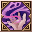

Loading...
Items
Weapons
Sword
Hammer
Axe
Two-Handed Sword
Two-Handed Hammer
Two-Handed Axe
Bow
Firearm
Relic
Staff
Shield
One-Handed Mecha Weapon
Two-Handed Mecha Weapon
Artillery
Arrows
Shells
Crystal
Katana
Armor
Head
Body
Legs
Hands
Feets
Back
Accesory
Backpack
Special Equipment
One-Handed Equipment
Two-Handed Equipment
Headgear
Back
Body
Talents Items
Talent Card
Talent Plane
Talent Fragment
Talent Skill
Power Stone
Sprite
Sprite
Jug Monster
Backpack
Sprite Island Formule
Sprite Island Breeding
Sprite Island Recipes
Sprite Island Buildings
Sprite Customes
Sprite Workbench
Sprite Emblem
Skill Book(Novice)
Skill Book(Intermediate)
Skill Book(Advanced)
Supplies
Mining
Foraging
Hunting
Crafting Ingredients
Piedras de Equipo
Gem Stone
Rune Stone
Resonance Stone
Nucleus
Mounts
Thrones
Comb Talents
Berserker
Paladin
Ranger
Assassin
Cleric
Sage
Wizard
Necromancer
Enginer
Demolitionist
Void Runner
Time Traveler
Quest
Titles
Skills
Berserker
Paladin
Ranger
Assassin
Cleric
Sage
Wizard
Necromancer
Enginer
Demolitionist
Void Runner
Time Traveler
Sprites
Portuguese
English
Spanish
Portuguese
French
Suggestions
Contact Us
Credits
Make Alchemy
F.A.Q
Time
00
:
00
:
00
Emissaries Timer
<Avatar do Emissário>Anunciador da Luxúria
Floresta Antiga (X:290, Y:370) Monday 20:35
<Emissário Lunático> Loucura da Luxúria
Vale dos Cavaleiros (X:510.53, Y:619.852) Monday 20:35
<Emissário Pesadelo> Ladona Voraz
Arena de Combate do território ilusório (X:134.088, Y:347.754) Monday 15:30
Emissário Antigo Justiça
Vale dos Espíritos (X:439.138, Y:559.115) Monday 20:30
<Emissário Ilusionista> Alpha Yen
Aldeia Aura Ilusória (X:639.151, Y:232.943) Monday 15:30
<Emissário Ilusionista> Iota Zhong
Passagem da Chama de Fogo Congelante (X:534.548, Y:578.733) Monday 20:30
Skills Necromancer
Skills
Passive Skills
Name
Level
Effect
Foguete Mágico 1
Skills
×
Foguete Mágico 1
Foguete Mágico 2
Foguete Mágico 3
Foguete Mágico 4
Foguete Mágico 5
Foguete Mágico 6
Flecha Mágica de Erosão 1
Flecha Mágica de Erosão 2
Super Flecha Mágica Erosiva 1
Super Flecha Mágica Erosiva 2
6
Info
Lâmina Cega 1
Skills
×
Lâmina Cega 1
Lâmina Cega 2
Lâmina Cega 3
Lâmina Cega 4
Lâmina Cega 5
Lâmina Cega 6
Lâmina Destrutiva 1
Destruição de Lâmina 2
Lâmina da Destruição 1
Lâmina da Destruição 3
6
Info
Canhão da Estrela Mágica 1
Skills
×
Canhão da Estrela Mágica 1
Canhão da Estrela Mágica 2
Canhão da Estrela Mágica 3
Canhão da Estrela Mágica 4
Canhão da Estrela Mágica 5
Canhão da Estrela Mágica
Canhão Misterioso 1
Canhão Misterioso 2
Super Canhão Arcano 1
Super Canhão Arcano 2
6
Info
Ricochete Mágico 1
Skills
×
Ricochete Mágico 1
Ricochete Mágico 2
Ricochete Mágico 3
Ricochete Mágico 3
Ricochete Mágico 4
Ricochete Mágico 4
Ricochete Mágico 5
Ricochete Mágico 5
Ricochete Mágico 6
Ricochete Mágico 6
6
Info
Algemas Mágicas
Skills
×
Algemas Mágicas
8
Info
Nuvem Tóxica 1
Skills
×
Nuvem Tóxica 1
Nuvem Tóxica 2
Nuvem Tóxica 3
Nuvem Tóxica 4
Nuvem Tóxica 5
Nuvem Tóxica 6
Nuvem Tóxica Gigante 1
Nuvem Explosiva Enorme 2
Super Nuvem Tóxica 1
Super Nuvem Tóxica 2
8
Info
Escudo Mágico 1
Skills
×
Escudo Mágico 1
Escudo Mágico 2
Escudo Mágico 3
Escudo Mágico 4
Alto Escudo Mana 1
Alto Escudo Mana 2
Super Escudo Mágico 1
Super Escudo Mágico 2
16
Info
Prisão das Lâminas Dançantes 1
Skills
×
Prisão das Lâminas Dançantes 1
Prisão das Lâminas Dançantes 2
Prisão das Lâminas Dançantes 3
Prisão das Lâminas Dançantes 4
Prisão Reforçada das Lâminas Dançantes 1
Prisão Reforçada das Lâminas Dançantes 2
Prisão Máxima das Lâminas Dançantes 1
Prisão Máxima das Lâminas Dançantes 2
16
Info
Invocação Infernal 1
Skills
×
Invocação Infernal 1
Invocação Infernal 2
Invocação Infernal 3
Invocar Cérbero 1
Invocar Cérbero 2
31
Info
Flecha Sombra 1
Skills
×
Flecha Sombra 1
Flecha Sombra 2
Flecha Sombra 3
Flecha Sombra 4
Flecha Sombra 5
Flecha Sombra 6
Flecha Sombra 7
Flecha Sombra 8
Flecha Sombra 9
Flecha Sombra 1
Flecha Sombra 2
Flecha Sombra 3
Flecha Sombra 4
Raio Golpe das Sombras 5
Flecha Caos das Sombras 1
Flecha Caos das Sombras 2
Flecha Caos das Sombras 3
Flecha Caos das Sombras 4
31
Info
Sangue da Escuridão 1
Skills
×
Sangue da Escuridão 1
Sangue da Escuridão 2
Sangue da Escuridão 3
Sangue da Escuridão 4
Sangue da Escuridão 5
Sangue da Escuridão 6
Sangue da Escuridão 7
Sangue da Escuridão 8
Sangue da Escuridão 9
Sangue Infernal da Escuridão 1
Sangue Infernal da Escuridão 2
Sangue Infernal da Escuridão 3
Sangue do Inferno Sombrio 4
Sabedoria do Sangue Maldito 5
Sangue Grosso do Inferno das Trevas 1
Sangue Grosso do Inferno das Trevas 2
Sangue Grosso do Inferno das Trevas 3
31
Info
Comando Assassino
Skills
×
Comando Assassino
31
Info
Sacrifício da Bomba Sangrenta 1
Skills
×
Sacrifício da Bomba Sangrenta 1
Sacrifício da Bomba Sangrenta 2
Sacrifício da Bomba Sangrenta 3
Sacrifício da Bomba Sangrenta 4
Sacrifício da Bomba Sangrenta 5
Sacrifício da Bomba Sangrenta 6
Granada Carne e Sangue 1
Granada Carne e Sangue 2
Granada Cadavérica 3
Granada Gigante 1
Granada Gigante 2
31
Info
Deflagração da Praga 1
Skills
×
Deflagração da Praga 1
Deflagração da Praga 2
Deflagração da Praga 3
Deflagração da Praga 4
31
Info
Sanguessuga 1
Skills
×
Sanguessuga 1
Sanguessuga 2
Sanguessuga 3
Sanguessuga 4
Sanguessuga 5
Sanguessuga 6
Ladrão de Vidas 1
Ladrão de Vidas 2
Ladrão de Vidas 3
Sugador de Vida 1
Sugador de Vida 2
Sugador de Vida 3
32
Info
Neblina do Medo 1
Skills
×
Neblina do Medo 1
Neblina do Medo 2
Neblina do Medo 3
Neblina do Medo 4
32
Info
Forma Fantasmal 1
Skills
×
Forma Fantasmal 1
Forma Fantasmal 2
Forma Fantasmal 3
Forma Fantasmal 4
Forma Fantasmal 5
Forma de Miragem 1
Forma Fantasma 2
Forma de Assombração 1
Forma de Assombração 2
Forma de Assombração 3<br>
32
Info
Infestação Malvada 1
Skills
×
Infestação Malvada 1
Infestação Malvada 2
Infestação Malvada 3
Ligação do Diabo 4
Ligação do Diabo 1
Amarração Demoníaca 2
Amarração Demoníaca 3
32
Info
Dízimo do Mestre 1
Skills
×
Dízimo do Mestre 1
Dízimo do Mestre 2
Dízimo do Mestre 3
Dízimo do Mestre 4
Dízimo do Mestre 5
Dízimo do Mestre 6
Ordem de Sacrifício 1
Ordem de Sacrifício 2
Ordem de Sacrifício 3
Ordem do Sacrifício 4
Ordem do Sacrifício 5
Ordem do Sacrifício 6
32
Info
Toque Doentio 1
Skills
×
Toque Doentio 1
Toque Doentio 2
Toque Doentio 3
Toque Doentio 4
Toque Doentio 5
Toque Doentio Reforçado 1
Toque Doentio Reforçado 2
Praga Infecciosa 1
Praga Infecciosa 2
Praga Infecciosa 3
32
Info
Invocar Defunto 1
Skills
×
Invocar Defunto 1
Invocar Defunto 2
Invocar Defunto 3
Invocar Mago Infernal 1
Invocar Mago do Inferno 2
34
Info
Enfraquecimento 1
Skills
×
Enfraquecimento 1
Enfraquecimento 2
Enfraquecimento 3
Enfraquecimento Aperfeiçoado 1
Enfraquecimento Aperfeiçoado 2
Maldição Brutal 1
Maldição Brutal 2
36
Info
Destruição Mental 1
Skills
×
Destruição Mental 1
Destruição Mental 2
Destruição Mental 3
Destruição Mental Melhorada 1
Destruição Mental Melhorada 2
Maldição da Sabedoria 1
Maldição da Sabedoria 2
36
Info
Maldição de Má Sorte 1
Skills
×
Maldição de Má Sorte 1
Maldição de Má Sorte 2
Maldição de Má Sorte 3
Maldição do Jynx 4
Maldição de Má Sorte 5
Aumenta a Maldição de Má Sorte 1
Aumenta a Maldição de Má Sorte 2
Maldição de Má Sorte 3
36
Info
Invocar Cadáver 1
Skills
×
Invocar Cadáver 1
Invocar Cadáver 2
Invocar Golem 3
Invocar Carrasco Infernal 1
38
Info
Marca da Peste 1
Skills
×
Marca da Peste 1
Marca da Peste 2
Marca da Peste 3
Marca da Peste 4
Marca da Peste 5
Marca da Peste 6
Marca da Peste 7
Realça a Marca da Peste 1
Realça a Marca da Peste 2
Realça a Marca da Peste 3
Marca de Pestilência Melhorada 4
Marca da Praga 5
Marca da Pestilência 1
Marca da Pestilência 2
Marca da Pestilência 3
Marca da Pestilência 4
38
Info
Frenesi Sangrento 1
Skills
×
Frenesi Sangrento 1
Frenesi Sangrento 2
Frenesi Sangrento 3
Agitação de Monstro 1
Agitação de Monstro 2
Destruição Demoníaca 1
Destruição Demoníaca 2
40
Info
Chamado do Abismo 1
Skills
×
Chamado do Abismo 1
Chamado do Abismo 2
Chamado do Abismo 3
Chamado do Abismo 4
Chamado do Abismo 5
Chamado do Abismo 6
Demônio do Gigante Inferno 4
Chamado do Abismo 7
Alto Demônio do Inferno 1
Alto Demônio do Inferno 2
Alto Demônio do Inferno 3
Alto Demônio Infernal 5
Espírito Maligno do Inferno 1
Espírito Maligno do Inferno 2
Espírito Maligno do Inferno 3
Espírito Maligno do Inferno 4
40
Info
Presente da Escuridão 1
Skills
×
Presente da Escuridão 1
Presente da Escuridão 2
Presente da Escuridão 3
Presente da Escuridão 4
Presente da Escuridão 5
Ritual de Diabinho Negro 1
Ritual de Diabinho Negro 3
Ritual de Diabinho Negro 2
Reino Imperial das Trevas 1
Reino Imperial das Trevas 2
Reino Imperial das Trevas 3
40
Info
Comedor de Almas 1
Skills
×
Comedor de Almas 1
Comedor de Almas 2
Comedor de Almas 3
Comedor de Almas 4
Devorador de Almas 1
Comedor de Almas 2
61
Info
Muro Quebrador de Ossos 1
Skills
×
Muro Quebrador de Ossos 1
Muro Quebrador de Ossos 2
Muro Quebrador de Ossos 3
Muro Quebrador de Ossos 4
Muro Quebrador de Ossos 5
Muro das Carcaças 1
Muro das Carcaças 2
61
Info
Liberação Potencial
Skills
×
Liberação Potencial
66
Info
Escapou sem deixar rastros
Skills
×
Escapou sem deixar rastros
66
Info
Ataque Negro
Skills
×
Ataque Negro
66
Info
Banquete Assombroso 1
Skills
×
Banquete Assombroso 1
Banquete Assombroso 2
Banquete Assombroso 3
Banquete Assombroso 4
Banquete Assombroso 5
Banquete Assombroso 6
Banquete Assombroso 7
Banquete Assombroso 8
Banquete Assombroso 9
66
Info
Lança das Trevas 1
Skills
×
Lança das Trevas 1
Lança das Trevas 2
Lança das Trevas 3
Lança das Trevas 4
Lança das Trevas 5
Lança Almaldiçoada 1
Lança Almaldiçoada 2
68
Info
Abraço da Assombração 1
Skills
×
Abraço da Assombração 1
Abraço da Assombração 2
Abraço da Assombração 3
Abraço da Assombração 4
Abraço da Assombração 5
70
Info
Sopro da Assombração 1
Skills
×
Sopro da Assombração 1
Sopro da Assombração 2
Sopro da Assombração 3
Sopro da Assombração 4
Sopro da Assombração 5
Sopro da Assombração 6
Sopro da Assombração 7
70
Info
Chamado Celestial
Skills
×
Chamado Celestial
84
Info
Praga Volátil 1
Skills
×
Praga Volátil 1
Praga Volátil 2
86
Info
Tirar Encantamento Mágico 1
Skills
×
Tirar Encantamento Mágico 1
Tirar Encantamento Mágico 2
Tirar Encantamento Mágico 3
Tirar Encantamento Mágico 4
Tirar Encantamento Mágico 5
86
Info
Ultimate Soul Drain 1
Skills
×
Ultimate Soul Drain 1
Ultimate Soul Drain 2

Drenagem Final de Alma 3
Drenagem Final de Alma 4
86
Info
Invocação do Gigante Malvado
Skills
×
Invocação do Gigante Malvado
91
Info
Invocação do Gigante Malvado Ancião
Skills
×
Invocação do Gigante Malvado Ancião
91
Info
Necromancia
Skills
×
Necromancia
91
Info
Círculo Psíquico
Skills
×
Círculo Psíquico
91
Info
Magia Negra Proibida
Skills
×
Magia Negra Proibida
91
Info
Tirar Magia Negra
Skills
×
Tirar Magia Negra
91
Info
Name
Level
Effect
Alma Arrebentada a
Skills
×
Alma Arrebentada a
Alma Arrebentada ß
Alma Arrebentada ß
Alma Arrebentada d
6
Info
Canhão da Estrela Mágica Incrementado 1
Skills
×
Canhão da Estrela Mágica Incrementado 1
Canhão da Estrela Mágica Aperfeiçoado 2
Canhão da Estrela Mágica Aperfeiçoado 3
Canhão da Estrela Mágica Incrementado 4
Canhão da Estrela Mágica Aperfeiçoado 5
6
Info
Adepto à Mágica
Skills
×
Adepto à Mágica
6
Info
Algemas Mágicas Incrementadas 1
Skills
×
Algemas Mágicas Incrementadas 1
Algemas Mágicas Incrementadas 2
Algemas Mágicas Incrementadas 3
Algemas Mágicas Incrementadas 4
Algemas Mágicas Incrementadas 5
8
Info
Atirador de Precisão Mágica
Skills
×
Atirador de Precisão Mágica
16
Info
Flecha Sombra Melhorada 1
Skills
×
Flecha Sombra Melhorada 1
Flecha Sombra Melhorada 2
Flecha Sombra Melhorada 3
Flecha Sombra Melhorada 4
Flecha Sombra Melhorada 5
31
Info
Bomba de Sacrifício de Sangue Melhorada 1
Skills
×
Bomba de Sacrifício de Sangue Melhorada 1
Bomba de Sacrifício de Sangue Melhorada 2
Bomba de Sacrifício de Sangue Melhorada 3
Bomba de Sacrifício de Sangue Melhorada 4
Bomba de Sacrifício de Sangue Melhorada 5
31
Info
Sanguessuga Melhorada 1
Skills
×
Sanguessuga Melhorada 1
Sanguessuga Melhorada 2
Sanguessuga Melhorada 3
Sanguessuga Melhorada 4
Sanguessuga Melhorada 5
32
Info
Enfraquecimento Aperfeiçoado 1
Skills
×
Enfraquecimento Aperfeiçoado 1
Enfraquecimento Aperfeiçoado 2
Enfraquecimento Aperfeiçoado 3
Enfraquecimento Aperfeiçoado 4
Enfraquecimento Aperfeiçoado 5
36
Info
Destruição Mental Melhorada 1
Skills
×
Destruição Mental Melhorada 1
Destruição Mental Melhorada 2
Destruição Mental Melhorada 3
Destruição Mental Melhorada 4
Destruição Mental Melhorada 5
36
Info
Maldição de Má Sorte Melhorada 1
Skills
×
Maldição de Má Sorte Melhorada 1
Maldição de Má Sorte Melhorada 2
Maldição de Má Sorte Melhorada 3
Maldição de Má Sorte Melhorada 4
Maldição de Má Sorte Melhorada 5
36
Info
Marca de Pestilência Aumentada 1
Skills
×
Marca de Pestilência Aumentada 1
Marca de Pestilência Aumentada 2
Marca de Pestilência Aumentada 3
Marca de Pestilência Melhorada 4
Marca de Pestilência Melhorada 5
38
Info
Muro de Lâmina Óssea Aperfeiçoado 1
Skills
×
Muro de Lâmina Óssea Aperfeiçoado 1
Muro de Lâmina Óssea Aperfeiçoado 2
Muro de Lâmina Óssea Aperfeiçoado 3
Muro de Lâmina Óssea Aperfeiçoado 4
Muro de Lâmina Óssea Aperfeiçoado 5
61
Info
Enfraquecimento Superaperfeiçoado 1
Skills
×
Enfraquecimento Superaperfeiçoado 1
Enfraquecimento Superaperfeiçoado 2
Enfraquecimento Superaperfeiçoado 3
Enfraquecimento Superaperfeiçoado 4
Enfraquecimento Superaperfeiçoado 5
66
Info
Golpe de Choque de Sombra Aperfeiçoado 1
Skills
×
Golpe de Choque de Sombra Aperfeiçoado 1
Golpe de Choque de Sombra Aperfeiçoado 2
Golpe de Choque de Sombra Aperfeiçoado 3
Golpe de Choque de Sombra Aperfeiçoado 4
Golpe de Choque de Sombra Aperfeiçoado 5
66
Info
Destruição Mental Supermelhorada 1
Skills
×
Destruição Mental Supermelhorada 1
Destruição Mental Supermelhorada 2
Destruição Mental Supermelhorada 3
Destruição Mental Supermelhorada 4
Destruição Mental Supermelhorada 5
66
Info
Maldição de Má Sorte Supermelhorada 1
Skills
×
Maldição de Má Sorte Supermelhorada 1
Maldição de Má Sorte Supermelhorada 2
Maldição de Má Sorte Supermelhorada 3
Maldição de Má Sorte Supermelhorada 4
Maldição de Má Sorte Supermelhorada 5
66
Info
Marca de Pestilência Supermelhorada 1
Skills
×
Marca de Pestilência Supermelhorada 1
Marca de Pestilência Supermelhorada 2
Marca de Pestilência Supermelhorada 3
Marca de Pestilência Supermelhorada 4
Marca de Pestilência Supermelhorada 5
66
Info
Granada de Carne e Sangue Melhorada 1
Skills
×
Granada de Carne e Sangue Melhorada 1
Granada de Carne e Sangue Melhorada 2
Granada de Carne e Sangue Melhorada 3
Granada de Carne e Sangue Melhorada 4
Granada de Carne e Sangue Melhorada 5
66
Info
Ataque Demoníaco 1
Skills
×
Ataque Demoníaco 1
Ataque Demoníaco 2
Ataque Demoníaco 3
Ataque Demoníaco 4
Ataque Demoníaco 5
Ataque Demoníaco 6
66
Info
Encantamento de Sombra 1
Skills
×
Encantamento de Sombra 1
Encantamento de Sombra 2
Encantamento de Sombra 3
66
Info
Coração de Ghoul 1
Skills
×
Coração de Ghoul 1
Coração de Ghoul 2
Coração de Ghoul 3
66
Info
Canhão Misterioso Aperfeiçoado 1
Skills
×
Canhão Misterioso Aperfeiçoado 1
Canhão Misterioso Aperfeiçoado 2
Canhão Misterioso Aperfeiçoado 3
Canhão Misterioso Aperfeiçoado 4
Canhão Misterioso Aperfeiçoado 5
68
Info
Ladrão de Vidas Aperfeiçoado 1
Skills
×
Ladrão de Vidas Aperfeiçoado 1
Ladrão de Vidas Aperfeiçoado 2
Ladrão de Vidas Aperfeiçoado 3
Ladrão de Vidas Aperfeiçoado 4
Ladrão de Vidas Aperfeiçoado 5
68
Info
Alma Mágica 1
Skills
×
Alma Mágica 1
Alma Mágica 2
Alma Mágica 3
Alma Mágica 4
Alma Mágica 5
86
Info
Marca da Morte 1
Skills
×
Marca da Morte 1
Marca da Morte 2
86
Info
Retorno do Revelador 1
Skills
×
Retorno do Revelador 1
91
Info
Credits
×
Developers:
Kougami
EX GS Angelique
Collaborators:
EX GS Roshi
EX GS Marchel
Contact Us
×
Contact emails
admin@grandfantasia-db.com